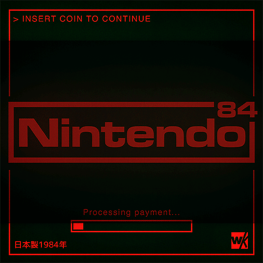

1984年、ゲームセンターの光と電子音は、まだ見ぬ未来への入口だった。 コインを入れて、スタートボタンを押す。画面が光るたびに、世界は少しだけ広くなった。 ファミコン、アーケード、そしてドットで描かれた冒険。 あの頃の「未来」は、赤いネオンの向こうで静かにロードされていた。 In 1984, the glow and electronic sounds of arcades felt like an entrance to an unseen future. Insert a coin, press the start button, and watch the screen come alive. With every flicker, the world seemed to grow a little larger. The Famicom, arcade machines, and pixel-built adventures transformed technology into wonder. Back then, the future was quietly loading somewhere beyond the red neon. Image source: Warakami Vaporwave – Imgur Gallery